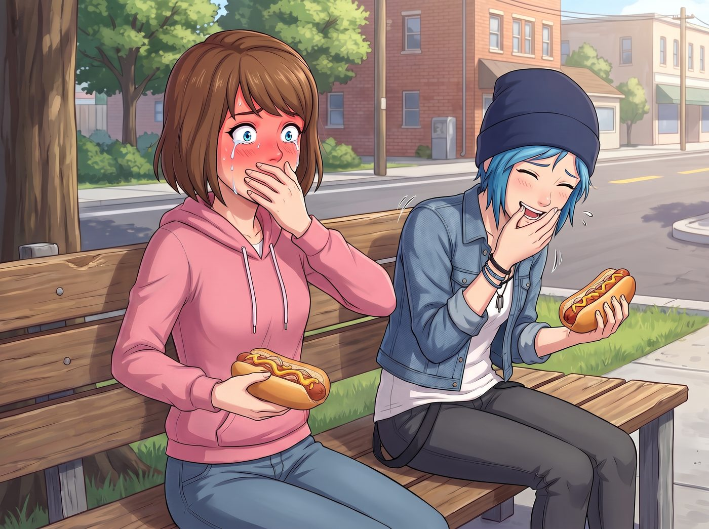

熱狗暗殺行動

一、皺巴巴的零錢
修車廠和地下演出賺來的那幾十塊錢,皺巴巴地揣在 Chloe 牛仔褲口袋裡。她絕不可能帶著這點家當,去排隊等位、點一份要價二十美元的中產網紅brunch。
「今晚,」她拉著 Max 的手,一臉理所當然,「咱們吃點真正對得起這身油污味的東西。」
二、皮卡引擎蓋上的漢堡
第一站是 Dick's Drive-In——招牌上斑駁的霓虹燈,飄著油炸的香氣。兩人各點了一份經典的「Dick's Deluxe」漢堡,配上現切的油炸薯條,裝在油漬漬的牛皮紙袋裡。
沒有座位,兩人索性爬上皮卡的引擎蓋,就著晚風大口啃著漢堡。
「這才是,」Chloe 滿嘴醬汁,含糊不清地感嘆,「兩三塊錢能買到的頂級享受。」
Max 咬了一口薯條,望著遠處城市漸暗的天際線,笑著點頭附和:「比那些擺盤精緻卻小得可憐的brunch實在多了。」
三、暗藏殺機的熱狗
酒足飯飽,兩人晃悠到街角一個熱狗攤前,準備來份宵夜——西雅圖式熱狗,焦脆的香腸和麵包中間,厚厚一層奶油乳酪,鋪滿焦糖炒洋蔥。
Chloe 趁著 Max 轉頭看街景的空檔,偷偷朝攤主使了個眼色,壓低聲音塞了張小費。
「大叔,」她語氣裡帶著壞笑,「她那份,奶油乳酪底下,多加三倍的墨西哥醃辣椒,表面拿洋蔥蓋嚴實點,別讓她看出來。」
攤主會意地眨眨眼,手法俐落地完成了這場「精準投毒」。
四、爆炸的辣度
兩人各自接過熱狗,並肩坐在路邊的長椅上。Max 毫無防備地咬下一大口,起初只覺得乳酪濃郁、洋蔥焦甜——兩秒後,那股辛辣猛地在舌尖炸開。
「唔——」她瞬間漲紅了臉,眼淚毫無預警地飆出來,一手捂著嘴,一手瘋狂在周圍摸索著找水,「這、這什麼鬼——」
Chloe 在一旁笑得直不起腰,肩膀劇烈抖動:「西雅圖特色,懂不懂,叫『驚喜辣度』!」
「妳、」Max 咳得說不出完整的話,眼淚鼻涕一起往下掉,卻在這混亂中,反手抓起旁邊沒開封的冰鎮櫻桃蘇打,晃了晃,「來,給妳降降溫。」
Chloe 毫無防備地湊過去,以為真的要遞水給她——
下一秒,Max「手滑」,整瓶冰鎮蘇打連同冰塊,精準地澆在了 Chloe 那件白色背心上,冰涼的液體瞬間浸透布料,貼在身上。
「靠!」Chloe 猛地跳起來,渾身濕透,「妳這是報復性打擊!」
「誰讓你先下毒,」Max 抹著眼淚,笑著討回一城,轉身就跑,「活該!」
五、街頭追逐戰
Chloe 抓起手邊剩下的芥末醬瓶子,毫不猶豫地追了上去,一邊追一邊瞄準,朝著 Max 的背影擠出一道黃色的醬汁弧線。
「站住!」
「妳先站住!」Max 邊跑邊笑,靈活地在路燈下左躲右閃,手裡不知何時也抄起另一瓶備用的番茄醬,反手朝身後噴射反擊。
兩人就這樣在昏黃的路燈下,拿著調味料瓶子互相追逐掃射,笑聲混著行人詫異的目光,響徹整條街道。芥末醬和番茄醬的痕跡,零星地噴濺在彼此的衣服上,活像兩個打翻了顏料罐的頑童。
追逐了將近五分鐘,兩人終於累得跑不動,雙雙癱靠在路邊的欄杆上,渾身狼狽,卻笑得喘不過氣。
「妳這身,」Chloe 打量著 Max 身上斑駁的醬料痕跡,笑得肩膀直抖,「活像剛從番茄醬工廠爆炸現場逃出來的。」
「妳自己還不是一樣,」Max也毫不客氣地反擊,伸手抹掉臉頰上的一點芥末醬,「不過,」她湊近,忽然壓低聲音,帶著點餘悸未消的認真,「那個辣度是真的要命,妳下次不許再這樣整我了。」
「好好好,」Chloe 舉手投降,伸手替她理了理被弄亂的髮絲,語氣裡帶著寵溺的笑意,「下次換個溫柔點的整蠱方式。」
兩人相視一笑,笑聲漸漸平息下來。Max 的目光落在 Chloe 臉頰邊緣,一小塊沒擦乾淨的番茄醬,忽然湊近了些。
「妳這裡,」她說著,沒有伸手去擦,而是直接俯身,舌尖輕輕舔掉了那抹醬料,動作快得像是隨口的調笑,卻帶著毫不掩飾的親密。
Chloe 瞬間愣住,耳根「唰」地紅透,難得語塞。
「這……」她結結巴巴,「妳幹嘛突然這樣!」
「浪費食物不好,」Max 直起身,笑得眉眼彎彎,一臉理所當然,唇角還沾著一點番茄醬的紅,「而且妳這個反應,比剛才被辣椒嗆到還精彩。」
「妳這是,」Chloe 難得地說不出反駁的話,只能瞪著她,耳朵紅得能滴出血,「妳這是報復吧,故意的!」
「隨便妳怎麼想,」Max 挽住她的手臂,拉著她重新往前走,語氣裡帶著毫不心虛的得意,「反正效果不錯。」
Chloe 悶聲跟上她的腳步,渾身醬料味地並肩走向下一個目的地,把這場荒謬又暢快的街頭大戰,連同這個猝不及防的親密瞬間,一併留在了西雅圖的夜色裡。